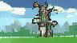
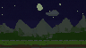
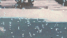
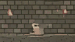
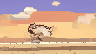

01Cap, gown, 12 frames a second
We gave you a first look at v1 in the middle of October, and opened it up to Atelier as a preview shortly after. Since then it has been training for around a month, and every couple of days its scenes got a little steadier, a little more colourful, a little more like the thing you asked for.
Today it's finished. v1 is out of preview and released on the Atelier plan: in the Studio, in the API, and in batches in the pro workspace.
Two seconds of pixel art, on a loop, from one sentence.
02The showreel
All of these are real v1 clips from its final exam: prompts it never saw while training. Each one is 96×54, 24 frames at 12 fps, and loops.





v1 is at its best with weather and light (sunsets, auroras, storms, rain), water, and one clear thing doing one clear thing. It's still shaky on fine details inside a moving character, so keep the main character simple and let the scene do the talking.
03How to get it
- On Atelier: pick v1 in the Studio, 50 clips a day, up to 4 per prompt in the pro workspace.
- In your code: send
"model": "v1"to the API and you get an animated GIF back. - Downloads: GIF at 1×, 4× or 8×, or an MP4 that plays the loop three times.
- Faster: Atelier's Express makes clips in seconds instead of minutes, 15 goes a day.
04What's next
v1 makes scenes. Next term it gets two new classmates. v2 focuses on game animations for sprites: a character walking, jumping or swinging a sword, as frames you can drop into a game. And later the c-series takes over big, general animations: backgrounds, auroras, all the fancy stuff.